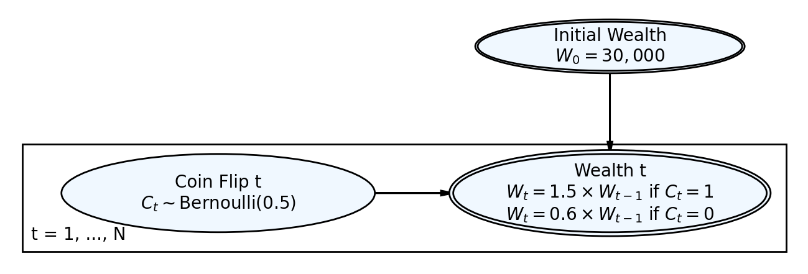
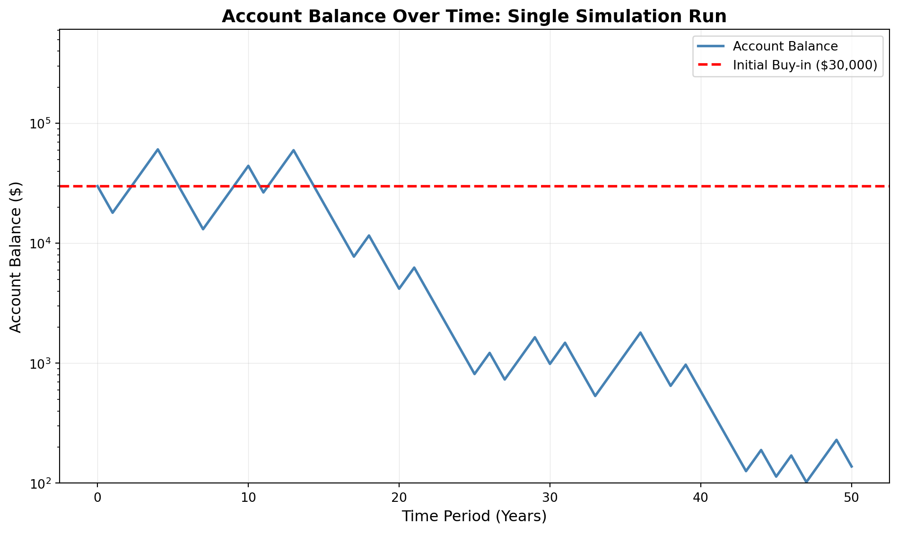
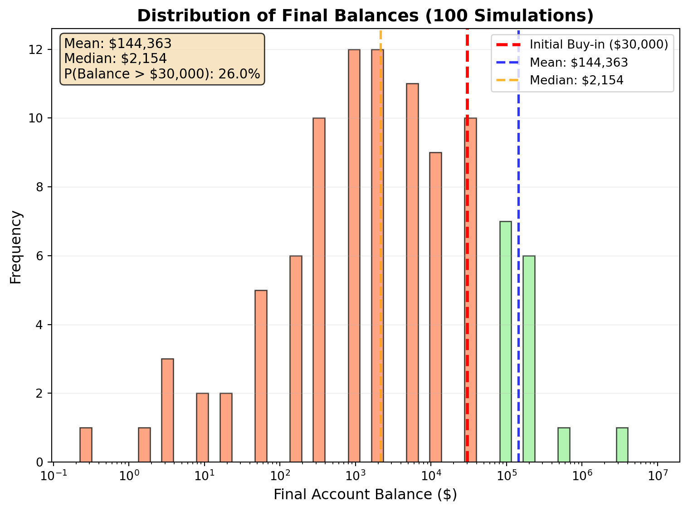
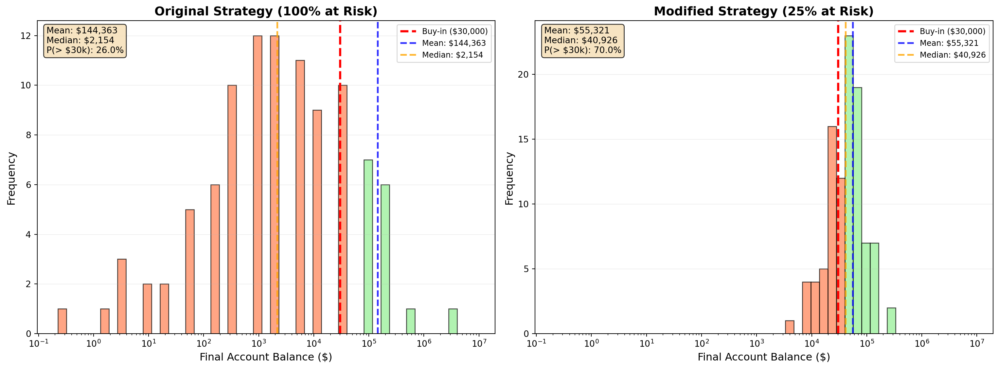
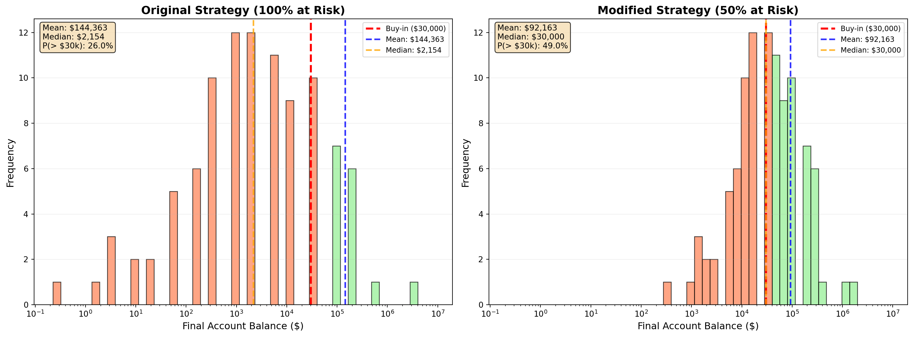

Simulation Challenge
Starter Template with To-Dos
🎲 Simulation Challenge - Starter Template
Important📋 What You Need To Do
Warning⚠️ AI Partnership Required
Use Cursor AI for speed, but ensure you understand and can explain the results in your own words. Verify cursor’s calculations as investment simulation is tricky.
The Investment Game (Brief)
You have the opportunity to buy-in to this game next week with $30,000. Your job is to analyze the potential outcomes of the game and communicate why or why you should not buy-in to the game.
Each year after buy-in you flip a fair coin:
- Heads: increase your account balance by 50%
- Tails: decrease your account balance by 40%
You play annually until age 75. Your mission is to analyze outcomes and communicate insights clearly.
Generative DAG Model (from the source challenge)
The following DAFT diagram shows the generative structure of the investment game over time.
Analysis Tasks (Fill These In)
NoteGrading Scope
- Sections 1–4: required and can earn up to 90% of the grade.
- Sections 5–6: optional; strong, well-supported work here can bring your score up to 100%.
1) Expected Value After 1 Flip
After one flip, the expected value of your account balance depends on the two outcomes:
- Heads (50% probability): Balance = $30,000 × 1.5 = $45,000
- Tails (50% probability): Balance = $30,000 × 0.6 = $18,000
Expected Value (EV): \[\text{EV} = 0.5 \times \$45,000 + 0.5 \times \$18,000 = \$22,500 + \$9,000 = \$31,500\]
The expected value after one flip is greater than $30,000 (specifically $31,500).
Gain as percentage of buy-in: \[\text{Gain} = \frac{\$31,500 - \$30,000}{\$30,000} \times 100\% = 5\%\]
# Compute expected value after one flip
buy_in = 30000
prob_heads = 0.5
prob_tails = 0.5
# Outcomes
value_heads = buy_in * 1.5 # +50%
value_tails = buy_in * 0.6 # -40%
# Expected value
ev_one_flip = prob_heads * value_heads + prob_tails * value_tails
# Gain as percentage
gain_percent = ((ev_one_flip - buy_in) / buy_in) * 100
print(f"Initial investment: ${buy_in:,}")
print(f"Value if heads (50% chance): ${value_heads:,}")
print(f"Value if tails (50% chance): ${value_tails:,}")
print(f"\nExpected value after 1 flip: ${ev_one_flip:,}")
print(f"Gain: {gain_percent:.1f}% of buy-in")
print(f"\nComparison: EV ${ev_one_flip:,.0f} {'>' if ev_one_flip > buy_in else '=' if ev_one_flip == buy_in else '<'} Initial ${buy_in:,}")Initial investment: $30,000
Value if heads (50% chance): $45,000.0
Value if tails (50% chance): $18,000.0
Expected value after 1 flip: $31,500.0
Gain: 5.0% of buy-in
Comparison: EV $31,500 > Initial $30,000
NoteConclusion
As explained and discussed in the classroom, this simple analysis is incomplete because it ignores the substantial variance (risk of ending with $18,000 vs. $45,000) and the compounding nature of wins and losses over time. We need to examine the distribution of outcomes over many periods to fully assess whether to buy-in. Else it looks too good strategy.
2) Single Simulation Over Time (Narrative + Plot)
Below is a single simulated path showing how the account balance evolves over time. This simulation provides insight into the volatility and potential outcomes of the game.
import numpy as np
import matplotlib.pyplot as plt
# Set seed for reproducibility
np.random.seed(42)
# Simulation parameters
buy_in = 30000
n_periods = 50 # Assuming starting age 25, playing until age 75
initial_balance = buy_in
# Initialize tracking
balance_history = [initial_balance]
current_balance = initial_balance
# Simulate coin flips over time
for period in range(n_periods):
# Fair coin flip (0.5 probability)
coin_flip = np.random.binomial(1, 0.5)
# Update balance based on outcome
if coin_flip == 1: # Heads
current_balance = current_balance * 1.5 # +50%
else: # Tails
current_balance = current_balance * 0.6 # -40%
balance_history.append(current_balance)
# Create the time series plot using matplotlib OO style
fig, ax = plt.subplots(figsize=(10, 6))
# Create time axis
time_periods = np.arange(len(balance_history))
# Plot the balance over time
ax.plot(time_periods, balance_history, linewidth=2, color='steelblue', label='Account Balance')
# Add horizontal line at buy-in for reference
ax.axhline(y=buy_in, color='red', linestyle='--', linewidth=2, label='Initial Buy-in ($30,000)')
# Styling
ax.set_xlabel('Time Period (Years)', fontsize=12)
ax.set_ylabel('Account Balance ($)', fontsize=12)
ax.set_title('Account Balance Over Time: Single Simulation Run', fontsize=14, fontweight='bold')
ax.grid(True, alpha=0.3, linestyle='-', linewidth=0.5)
ax.legend(loc='best', fontsize=10)
# Use log scale for y-axis to better visualize exponential growth/decay
ax.set_yscale('log')
ax.set_ylim(bottom=100, top=max(balance_history) * 10)
plt.tight_layout()
plt.show()
# Print summary statistics
final_balance = balance_history[-1]
print(f"\nSimulation Summary:")
print(f"Initial balance: ${initial_balance:,}")
print(f"Final balance: ${final_balance:,.2f}")
print(f"Net change: ${final_balance - initial_balance:,.2f} ({((final_balance / initial_balance - 1) * 100):.1f}%)")
print(f"Maximum balance: ${max(balance_history):,.2f}")
print(f"Minimum balance: ${min(balance_history):,.2f}")
Simulation Summary:
Initial balance: $30,000
Final balance: $137.84
Net change: $-29,862.16 (-99.5%)
Maximum balance: $60,750.00
Minimum balance: $102.10
NoteConclusion
The game is very volatile as shown in the plot. Due to compounding, the balance can grow to millions or shrink to pennies.
Are you happy with the outcome? Definitely not. As explained my initial investment has reduced to 137.84 over 50 years. This is a very risky game. We need to further do an analysis to balance this risk.
3) 100 Simulations: Distribution of Final Balances
Running 100 simulations provides a comprehensive view of the range of possible outcomes, revealing the true risk and reward profile of the game.
import numpy as np
import matplotlib.pyplot as plt
# Set seed for reproducibility
np.random.seed(123)
# Simulation parameters
buy_in = 30000
n_periods = 50
n_simulations = 100
# Storage for final balances
final_balances = []
# Run 100 simulations
for sim in range(n_simulations):
current_balance = buy_in
for period in range(n_periods):
# Fair coin flip
coin_flip = np.random.binomial(1, 0.5)
# Update balance
if coin_flip == 1: # Heads
current_balance = current_balance * 1.5 # +50%
else: # Tails
current_balance = current_balance * 0.6 # -40%
final_balances.append(current_balance)
final_balances = np.array(final_balances)
# Calculate statistics
mean_balance = np.mean(final_balances)
median_balance = np.median(final_balances)
prob_above_buyin = np.mean(final_balances > buy_in)
# Create histogram with matplotlib OO style
fig, ax = plt.subplots(figsize=(10, 6))
# Create bins for histogram (log scale for better visualization)
bins = np.logspace(np.log10(min(final_balances)), np.log10(max(final_balances)), 50)
# Plot histogram
n, bins, patches = ax.hist(final_balances, bins=bins, edgecolor='black', alpha=0.7, color='steelblue')
# Color bars based on whether they're above or below buy-in
for i, patch in enumerate(patches):
if bins[i] < buy_in:
patch.set_facecolor('coral') # Red for losses
else:
patch.set_facecolor('lightgreen') # Green for gains
# Add vertical line at buy-in
ax.axvline(x=buy_in, color='red', linestyle='--', linewidth=2.5, label='Initial Buy-in ($30,000)')
# Add mean and median lines
ax.axvline(x=mean_balance, color='blue', linestyle='--', linewidth=2, alpha=0.8, label=f'Mean: ${mean_balance:,.0f}')
ax.axvline(x=median_balance, color='orange', linestyle='--', linewidth=2, alpha=0.8, label=f'Median: ${median_balance:,.0f}')
# Styling
ax.set_xlabel('Final Account Balance ($)', fontsize=12)
ax.set_ylabel('Frequency', fontsize=12)
ax.set_title('Distribution of Final Balances (100 Simulations)', fontsize=14, fontweight='bold')
ax.set_xscale('log')
ax.legend(loc='upper right', fontsize=10)
ax.grid(True, alpha=0.3, linestyle='-', linewidth=0.5, axis='y')
# Add text box with key statistics
stats_text = f'Mean: ${mean_balance:,.0f}\nMedian: ${median_balance:,.0f}\nP(Balance > ${buy_in:,}): {prob_above_buyin:.1%}'
ax.text(0.02, 0.98, stats_text, transform=ax.transAxes, fontsize=11,
verticalalignment='top', bbox=dict(boxstyle='round', facecolor='wheat', alpha=0.8))
plt.tight_layout()
plt.show()
print(f"\nSimulation Statistics (100 runs):")
print(f" Mean final balance: ${mean_balance:,.2f}")
print(f" Median final balance: ${median_balance:,.2f}")
print(f" Probability of ending above buy-in: {prob_above_buyin:.1%}")
print(f" Min final balance: ${np.min(final_balances):,.2f}")
print(f" Max final balance: ${np.max(final_balances):,.2f}")
print(f" 25th percentile: ${np.percentile(final_balances, 25):,.2f}")
print(f" 75th percentile: ${np.percentile(final_balances, 75):,.2f}")
Simulation Statistics (100 runs):
Mean final balance: $144,362.93
Median final balance: $2,153.69
Probability of ending above buy-in: 26.0%
Min final balance: $0.23
Max final balance: $8,215,690.47
25th percentile: $344.59
75th percentile: $33,651.47
NoteConclusion
Even if the expected value appears favorable (from the single flip analysis), most players are likely to end up worse off. Only those who get a favorable sequence of heads early in the game stand a chance of meaningful gains. This is a high-risk, high-variance gamble rather than a reliable investment strategy.
4) Probability Balance > $30,000 at Age 75 (Original Game)
Report the probability estimate and interpret its practical meaning.
# Re-run simulations to ensure we have the data
import numpy as np
np.random.seed(123) # Same seed for reproducibility
buy_in = 30000
n_periods = 50
n_simulations = 100
final_balances_section4 = []
for sim in range(n_simulations):
current_balance = buy_in
for period in range(n_periods):
coin_flip = np.random.binomial(1, 0.5)
if coin_flip == 1:
current_balance = current_balance * 1.5
else:
current_balance = current_balance * 0.6
final_balances_section4.append(current_balance)
final_balances_section4 = np.array(final_balances_section4)
prob_above_buyin = np.mean(final_balances_section4 > buy_in)
print(f"Estimated probability of final balance > $30,000: {prob_above_buyin:.3f} ({prob_above_buyin:.1%})")
if prob_above_buyin < 0.5:
print(f"\n There is a {prob_above_buyin:.1%} chance of ending with more than your buy-in.")
print("\n This is less than 50%, meaning you're more likely to lose money than to gain.")
elif prob_above_buyin == 0.5:
print("\n Equal probability of gaining or losing from your buy-in.")
else:
print(f"\n There is a {prob_above_buyin:.1%} chance of ending with more than your buy-in.")
print("\n This is greater than 50%, meaning you're more likely to gain than to lose.")Estimated probability of final balance > $30,000: 0.260 (26.0%)
There is a 26.0% chance of ending with more than your buy-in.
This is less than 50%, meaning you're more likely to lose money than to gain.
NoteConclusion
We have estimated the probability going 3 ways: gaining more, equal wins and loses and losing more. We can see we are more likely to lose money than to gain. Next lets modify the strategy to Bet 25% and 50% of the balance each round and compare the results.
5.1) Modified Strategy (Bet 25% of Balance Each Round)
Instead of having the full balance at risk with each coin flip, assume only 25% of your balance is gambled each year. Compare this to the original game. Which is riskier? Which has better upside?
Modified Strategy Mechanics: - Only 25% of the current balance is gambled each year - 75% of the balance remains safe (not at risk) - If heads: the 25% portion gains 50%, so total balance = 75% + (25% × 1.5) = 112.5% of previous balance - If tails: the 25% portion loses 40%, so total balance = 75% + (25% × 0.6) = 90% of previous balance
This means each flip multiplies the balance by either 1.125 (heads) or 0.90 (tails), compared to the original 1.5 or 0.6.
import numpy as np
import matplotlib.pyplot as plt
# Set seed for reproducibility
np.random.seed(123)
# Simulation parameters
buy_in = 30000
n_periods = 50
n_simulations = 100
# Storage for final balances
final_balances_original = []
final_balances_modified = []
# Run 100 simulations for both strategies
for sim in range(n_simulations):
# Original strategy: full balance at risk
balance_original = buy_in
balance_modified = buy_in
for period in range(n_periods):
# Same coin flip for both strategies (fair comparison)
coin_flip = np.random.binomial(1, 0.5)
# Original strategy: full balance at risk
if coin_flip == 1: # Heads
balance_original = balance_original * 1.5 # +50%
else: # Tails
balance_original = balance_original * 0.6 # -40%
# Modified strategy: only 25% at risk
# 75% safe + 25% gambled
if coin_flip == 1: # Heads
# 75% safe + 25% * 1.5 = 75% + 37.5% = 112.5% of previous balance
balance_modified = balance_modified * 1.125
else: # Tails
# 75% safe + 25% * 0.6 = 75% + 15% = 90% of previous balance
balance_modified = balance_modified * 0.90
final_balances_original.append(balance_original)
final_balances_modified.append(balance_modified)
final_balances_original = np.array(final_balances_original)
final_balances_modified = np.array(final_balances_modified)
# Calculate statistics for both strategies
mean_original = np.mean(final_balances_original)
median_original = np.median(final_balances_original)
prob_above_buyin_original = np.mean(final_balances_original > buy_in)
mean_modified = np.mean(final_balances_modified)
median_modified = np.median(final_balances_modified)
prob_above_buyin_modified = np.mean(final_balances_modified > buy_in)
# Create comparison plot
fig, (ax1, ax2) = plt.subplots(1, 2, figsize=(16, 6))
# Determine shared bins for comparison
all_balances = np.concatenate([final_balances_original, final_balances_modified])
bins = np.logspace(np.log10(min(all_balances)), np.log10(max(all_balances)), 50)
# Plot original strategy
n1, bins1, patches1 = ax1.hist(final_balances_original, bins=bins, edgecolor='black', alpha=0.7, color='steelblue')
for i, patch in enumerate(patches1):
if bins1[i] < buy_in:
patch.set_facecolor('coral')
else:
patch.set_facecolor('lightgreen')
ax1.axvline(x=buy_in, color='red', linestyle='--', linewidth=2.5, label='Buy-in ($30,000)')
ax1.axvline(x=mean_original, color='blue', linestyle='--', linewidth=2, alpha=0.8, label=f'Mean: ${mean_original:,.0f}')
ax1.axvline(x=median_original, color='orange', linestyle='--', linewidth=2, alpha=0.8, label=f'Median: ${median_original:,.0f}')
ax1.set_xlabel('Final Account Balance ($)', fontsize=12)
ax1.set_ylabel('Frequency', fontsize=12)
ax1.set_title('Original Strategy (100% at Risk)', fontsize=14, fontweight='bold')
ax1.set_xscale('log')
ax1.legend(loc='upper right', fontsize=9)
ax1.grid(True, alpha=0.3, linestyle='-', linewidth=0.5, axis='y')
stats_text_original = f'Mean: ${mean_original:,.0f}\nMedian: ${median_original:,.0f}\nP(> $30k): {prob_above_buyin_original:.1%}'
ax1.text(0.02, 0.98, stats_text_original, transform=ax1.transAxes, fontsize=10,
verticalalignment='top', bbox=dict(boxstyle='round', facecolor='wheat', alpha=0.8))
# Plot modified strategy
n2, bins2, patches2 = ax2.hist(final_balances_modified, bins=bins, edgecolor='black', alpha=0.7, color='steelblue')
for i, patch in enumerate(patches2):
if bins2[i] < buy_in:
patch.set_facecolor('coral')
else:
patch.set_facecolor('lightgreen')
ax2.axvline(x=buy_in, color='red', linestyle='--', linewidth=2.5, label='Buy-in ($30,000)')
ax2.axvline(x=mean_modified, color='blue', linestyle='--', linewidth=2, alpha=0.8, label=f'Mean: ${mean_modified:,.0f}')
ax2.axvline(x=median_modified, color='orange', linestyle='--', linewidth=2, alpha=0.8, label=f'Median: ${median_modified:,.0f}')
ax2.set_xlabel('Final Account Balance ($)', fontsize=12)
ax2.set_ylabel('Frequency', fontsize=12)
ax2.set_title('Modified Strategy (25% at Risk)', fontsize=14, fontweight='bold')
ax2.set_xscale('log')
ax2.legend(loc='upper right', fontsize=9)
ax2.grid(True, alpha=0.3, linestyle='-', linewidth=0.5, axis='y')
stats_text_modified = f'Mean: ${mean_modified:,.0f}\nMedian: ${median_modified:,.0f}\nP(> $30k): {prob_above_buyin_modified:.1%}'
ax2.text(0.02, 0.98, stats_text_modified, transform=ax2.transAxes, fontsize=10,
verticalalignment='top', bbox=dict(boxstyle='round', facecolor='wheat', alpha=0.8))
plt.tight_layout()
plt.show()
# Print comparison statistics
print("=" * 70)
print("COMPARISON: Original vs Modified (25% bet) Strategy")
print("=" * 70)
print(f"\nOriginal Strategy (100% at risk):")
print(f" Mean final balance: ${mean_original:,.2f}")
print(f" Median final balance: ${median_original:,.2f}")
print(f" Probability of ending above buy-in: {prob_above_buyin_original:.1%}")
print(f" Min final balance: ${np.min(final_balances_original):,.2f}")
print(f" Max final balance: ${np.max(final_balances_original):,.2f}")
print(f" 25th percentile: ${np.percentile(final_balances_original, 25):,.2f}")
print(f" 75th percentile: ${np.percentile(final_balances_original, 75):,.2f}")
print(f"\nModified Strategy (25% at risk):")
print(f" Mean final balance: ${mean_modified:,.2f}")
print(f" Median final balance: ${median_modified:,.2f}")
print(f" Probability of ending above buy-in: {prob_above_buyin_modified:.1%}")
print(f" Min final balance: ${np.min(final_balances_modified):,.2f}")
print(f" Max final balance: ${np.max(final_balances_modified):,.2f}")
print(f" 25th percentile: ${np.percentile(final_balances_modified, 25):,.2f}")
print(f" 75th percentile: ${np.percentile(final_balances_modified, 75):,.2f}")
print(f"\n" + "=" * 70)
print("KEY INSIGHTS:")
print("=" * 70)
# Risk comparison (lower variance/volatility = less risky)
std_original = np.std(final_balances_original)
std_modified = np.std(final_balances_modified)
cv_original = std_original / mean_original # Coefficient of variation
cv_modified = std_modified / mean_modified
print(f"\nRisk Analysis (Coefficient of Variation):")
print(f" Original: {cv_original:.3f}")
print(f" Modified: {cv_modified:.3f}")
if cv_original > cv_modified:
print(f" → Original strategy is RISKIER (higher volatility)")
else:
print(f" → Modified strategy is RISKIER (higher volatility)")
# Upside comparison (higher max/upper percentiles = better upside)
print(f"\nUpside Potential:")
print(f" Original max: ${np.max(final_balances_original):,.2f}")
print(f" Modified max: ${np.max(final_balances_modified):,.2f}")
if np.max(final_balances_original) > np.max(final_balances_modified):
print(f" → Original strategy has BETTER UPSIDE (higher maximum)")
else:
print(f" → Modified strategy has BETTER UPSIDE (higher maximum)")
print(f"\n Original 75th percentile: ${np.percentile(final_balances_original, 75):,.2f}")
print(f" Modified 75th percentile: ${np.percentile(final_balances_modified, 75):,.2f}")
# Probability comparison
print(f"\nProbability of Profit:")
print(f" Original: {prob_above_buyin_original:.1%}")
print(f" Modified: {prob_above_buyin_modified:.1%}")
if prob_above_buyin_modified > prob_above_buyin_original:
print(f" → Modified strategy has HIGHER probability of profit")
else:
print(f" → Original strategy has HIGHER probability of profit")
print("=" * 70)
======================================================================
COMPARISON: Original vs Modified (25% bet) Strategy
======================================================================
Original Strategy (100% at risk):
Mean final balance: $144,362.93
Median final balance: $2,153.69
Probability of ending above buy-in: 26.0%
Min final balance: $0.23
Max final balance: $8,215,690.47
25th percentile: $344.59
75th percentile: $33,651.47
Modified Strategy (25% at risk):
Mean final balance: $55,320.95
Median final balance: $40,925.79
Probability of ending above buy-in: 70.0%
Min final balance: $4,394.37
Max final balance: $304,920.88
25th percentile: $26,192.50
75th percentile: $79,933.18
======================================================================
KEY INSIGHTS:
======================================================================
Risk Analysis (Coefficient of Variation):
Original: 6.071
Modified: 0.825
→ Original strategy is RISKIER (higher volatility)
Upside Potential:
Original max: $8,215,690.47
Modified max: $304,920.88
→ Original strategy has BETTER UPSIDE (higher maximum)
Original 75th percentile: $33,651.47
Modified 75th percentile: $79,933.18
Probability of Profit:
Original: 26.0%
Modified: 70.0%
→ Modified strategy has HIGHER probability of profit
======================================================================
NoteConclusion
The comparison between the original strategy (100% at risk) and the modified strategy (25% at risk) reveals important trade-offs between risk and reward. The original strategy has better upside potential in terms of maximum possible gains but is also more risky. The modified strategy is less risky but has a lower upside potential. Let’s run one more simulation with 50% of the balance at risk and compare the results.
5.2) Modified Strategy (Bet 50% of Balance Each Round)
Instead of having the full balance at risk with each coin flip, assume only 50% of your balance is gambled each year. Compare this to the original game. Which is riskier? Which has better upside?
Modified Strategy Mechanics: - Only 50% of the current balance is gambled each year - 50% of the balance remains safe (not at risk) - If heads: the 50% portion gains 50%, so total balance = 50% + (50% × 1.5) = 125% of previous balance - If tails: the 50% portion loses 40%, so total balance = 50% + (50% × 0.6) = 80% of previous balance
This means each flip multiplies the balance by either 1.25 (heads) or 0.80 (tails), compared to the original 1.5 or 0.6.
import numpy as np
import matplotlib.pyplot as plt
# Set seed for reproducibility
np.random.seed(123)
# Simulation parameters
buy_in = 30000
n_periods = 50
n_simulations = 100
# Storage for final balances
final_balances_original = []
final_balances_modified_50 = []
# Run 100 simulations for both strategies
for sim in range(n_simulations):
# Original strategy: full balance at risk
balance_original = buy_in
balance_modified_50 = buy_in
for period in range(n_periods):
# Same coin flip for both strategies (fair comparison)
coin_flip = np.random.binomial(1, 0.5)
# Original strategy: full balance at risk
if coin_flip == 1: # Heads
balance_original = balance_original * 1.5 # +50%
else: # Tails
balance_original = balance_original * 0.6 # -40%
# Modified strategy: only 50% at risk
# 50% safe + 50% gambled
if coin_flip == 1: # Heads
# 50% safe + 50% * 1.5 = 50% + 75% = 125% of previous balance
balance_modified_50 = balance_modified_50 * 1.25
else: # Tails
# 50% safe + 50% * 0.6 = 50% + 30% = 80% of previous balance
balance_modified_50 = balance_modified_50 * 0.80
final_balances_original.append(balance_original)
final_balances_modified_50.append(balance_modified_50)
final_balances_original = np.array(final_balances_original)
final_balances_modified_50 = np.array(final_balances_modified_50)
# Calculate statistics for both strategies
mean_original = np.mean(final_balances_original)
median_original = np.median(final_balances_original)
prob_above_buyin_original = np.mean(final_balances_original > buy_in)
prob_above_30k_original = np.mean(final_balances_original > 30000)
mean_modified_50 = np.mean(final_balances_modified_50)
median_modified_50 = np.median(final_balances_modified_50)
prob_above_buyin_modified_50 = np.mean(final_balances_modified_50 > buy_in)
prob_above_30k_modified_50 = np.mean(final_balances_modified_50 > 30000)
# Create comparison plot
fig, (ax1, ax2) = plt.subplots(1, 2, figsize=(16, 6))
# Determine shared bins for comparison
all_balances = np.concatenate([final_balances_original, final_balances_modified_50])
bins = np.logspace(np.log10(min(all_balances)), np.log10(max(all_balances)), 50)
# Plot original strategy
n1, bins1, patches1 = ax1.hist(final_balances_original, bins=bins, edgecolor='black', alpha=0.7, color='steelblue')
for i, patch in enumerate(patches1):
if bins1[i] < buy_in:
patch.set_facecolor('coral')
else:
patch.set_facecolor('lightgreen')
ax1.axvline(x=buy_in, color='red', linestyle='--', linewidth=2.5, label='Buy-in ($30,000)')
ax1.axvline(x=mean_original, color='blue', linestyle='--', linewidth=2, alpha=0.8, label=f'Mean: ${mean_original:,.0f}')
ax1.axvline(x=median_original, color='orange', linestyle='--', linewidth=2, alpha=0.8, label=f'Median: ${median_original:,.0f}')
ax1.set_xlabel('Final Account Balance ($)', fontsize=12)
ax1.set_ylabel('Frequency', fontsize=12)
ax1.set_title('Original Strategy (100% at Risk)', fontsize=14, fontweight='bold')
ax1.set_xscale('log')
ax1.legend(loc='upper right', fontsize=9)
ax1.grid(True, alpha=0.3, linestyle='-', linewidth=0.5, axis='y')
stats_text_original = f'Mean: ${mean_original:,.0f}\nMedian: ${median_original:,.0f}\nP(> $30k): {prob_above_30k_original:.1%}'
ax1.text(0.02, 0.98, stats_text_original, transform=ax1.transAxes, fontsize=10,
verticalalignment='top', bbox=dict(boxstyle='round', facecolor='wheat', alpha=0.8))
# Plot modified strategy (50%)
n2, bins2, patches2 = ax2.hist(final_balances_modified_50, bins=bins, edgecolor='black', alpha=0.7, color='steelblue')
for i, patch in enumerate(patches2):
if bins2[i] < buy_in:
patch.set_facecolor('coral')
else:
patch.set_facecolor('lightgreen')
ax2.axvline(x=buy_in, color='red', linestyle='--', linewidth=2.5, label='Buy-in ($30,000)')
ax2.axvline(x=mean_modified_50, color='blue', linestyle='--', linewidth=2, alpha=0.8, label=f'Mean: ${mean_modified_50:,.0f}')
ax2.axvline(x=median_modified_50, color='orange', linestyle='--', linewidth=2, alpha=0.8, label=f'Median: ${median_modified_50:,.0f}')
ax2.set_xlabel('Final Account Balance ($)', fontsize=12)
ax2.set_ylabel('Frequency', fontsize=12)
ax2.set_title('Modified Strategy (50% at Risk)', fontsize=14, fontweight='bold')
ax2.set_xscale('log')
ax2.legend(loc='upper right', fontsize=9)
ax2.grid(True, alpha=0.3, linestyle='-', linewidth=0.5, axis='y')
stats_text_modified_50 = f'Mean: ${mean_modified_50:,.0f}\nMedian: ${median_modified_50:,.0f}\nP(> $30k): {prob_above_30k_modified_50:.1%}'
ax2.text(0.02, 0.98, stats_text_modified_50, transform=ax2.transAxes, fontsize=10,
verticalalignment='top', bbox=dict(boxstyle='round', facecolor='wheat', alpha=0.8))
plt.tight_layout()
plt.show()
# Print comparison statistics
print("=" * 70)
print("COMPARISON: Original vs Modified (50% bet) Strategy")
print("=" * 70)
print(f"\nOriginal Strategy (100% at risk):")
print(f" Mean final balance: ${mean_original:,.2f}")
print(f" Median final balance: ${median_original:,.2f}")
print(f" Probability of ending above $30,000: {prob_above_30k_original:.3f} ({prob_above_30k_original:.1%})")
print(f" Min final balance: ${np.min(final_balances_original):,.2f}")
print(f" Max final balance: ${np.max(final_balances_original):,.2f}")
print(f" 25th percentile: ${np.percentile(final_balances_original, 25):,.2f}")
print(f" 75th percentile: ${np.percentile(final_balances_original, 75):,.2f}")
print(f"\nModified Strategy (50% at risk):")
print(f" Mean final balance: ${mean_modified_50:,.2f}")
print(f" Median final balance: ${median_modified_50:,.2f}")
print(f" Probability of ending above $30,000: {prob_above_30k_modified_50:.3f} ({prob_above_30k_modified_50:.1%})")
print(f" Min final balance: ${np.min(final_balances_modified_50):,.2f}")
print(f" Max final balance: ${np.max(final_balances_modified_50):,.2f}")
print(f" 25th percentile: ${np.percentile(final_balances_modified_50, 25):,.2f}")
print(f" 75th percentile: ${np.percentile(final_balances_modified_50, 75):,.2f}")
print(f"\n" + "=" * 70)
print("KEY INSIGHTS:")
print("=" * 70)
# Risk comparison (lower variance/volatility = less risky)
std_original = np.std(final_balances_original)
std_modified_50 = np.std(final_balances_modified_50)
cv_original = std_original / mean_original # Coefficient of variation
cv_modified_50 = std_modified_50 / mean_modified_50
print(f"\nRisk Analysis (Coefficient of Variation):")
print(f" Original: {cv_original:.3f}")
print(f" Modified (50%): {cv_modified_50:.3f}")
if cv_original > cv_modified_50:
print(f" → Original strategy is RISKIER (higher volatility)")
else:
print(f" → Modified strategy is RISKIER (higher volatility)")
# Upside comparison (higher max/upper percentiles = better upside)
print(f"\nUpside Potential:")
print(f" Original max: ${np.max(final_balances_original):,.2f}")
print(f" Modified (50%) max: ${np.max(final_balances_modified_50):,.2f}")
if np.max(final_balances_original) > np.max(final_balances_modified_50):
print(f" → Original strategy has BETTER UPSIDE (higher maximum)")
else:
print(f" → Modified strategy has BETTER UPSIDE (higher maximum)")
print(f"\n Original 75th percentile: ${np.percentile(final_balances_original, 75):,.2f}")
print(f" Modified (50%) 75th percentile: ${np.percentile(final_balances_modified_50, 75):,.2f}")
# Probability comparison
print(f"\nProbability of Profit (P > $30,000):")
print(f" Original: {prob_above_30k_original:.3f} ({prob_above_30k_original:.1%})")
print(f" Modified (50%): {prob_above_30k_modified_50:.3f} ({prob_above_30k_modified_50:.1%})")
if prob_above_30k_modified_50 > prob_above_30k_original:
print(f" → Modified strategy has HIGHER probability of profit")
print(f" → Difference: +{prob_above_30k_modified_50 - prob_above_30k_original:.1%} points")
else:
print(f" → Original strategy has HIGHER probability of profit")
print(f" → Difference: +{prob_above_30k_original - prob_above_30k_modified_50:.1%} points")
print("=" * 70)
======================================================================
COMPARISON: Original vs Modified (50% bet) Strategy
======================================================================
Original Strategy (100% at risk):
Mean final balance: $144,362.93
Median final balance: $2,153.69
Probability of ending above $30,000: 0.260 (26.0%)
Min final balance: $0.23
Max final balance: $8,215,690.47
25th percentile: $344.59
75th percentile: $33,651.47
Modified Strategy (50% at risk):
Mean final balance: $92,163.44
Median final balance: $30,000.00
Probability of ending above $30,000: 0.490 (49.0%)
Min final balance: $345.88
Max final balance: $1,665,334.54
25th percentile: $12,288.00
75th percentile: $114,440.92
======================================================================
KEY INSIGHTS:
======================================================================
Risk Analysis (Coefficient of Variation):
Original: 6.071
Modified (50%): 2.214
→ Original strategy is RISKIER (higher volatility)
Upside Potential:
Original max: $8,215,690.47
Modified (50%) max: $1,665,334.54
→ Original strategy has BETTER UPSIDE (higher maximum)
Original 75th percentile: $33,651.47
Modified (50%) 75th percentile: $114,440.92
Probability of Profit (P > $30,000):
Original: 0.260 (26.0%)
Modified (50%): 0.490 (49.0%)
→ Modified strategy has HIGHER probability of profit
→ Difference: +23.0% points
======================================================================
NoteConclusion
The comparison between the original strategy (100% at risk) and the modified strategy (25% at risk) reveals important trade-offs between risk and reward. The original strategy has better upside potential in terms of maximum possible gains but is also more risky. The modified strategy is less risky but has a lower upside potential, similar to the 25% strategy. However, we can see that the modified strategy (50% at risk) has a higher probability of profit than the original strategy. This is because the modified strategy is less risky and has a higher upside potential. but only slightly less riskier than 25% strategy.
6) Briefly Explain Your Findings From The Previous Step in Light of A Concept Known as the “Kelly Criterion”
NoteConclusion
What is the Kelly Criterion?
The Kelly Criterion is a mathematical formula that determines the optimal fraction of your bankroll to bet in order to maximize long-term exponential growth. The Kelly Criterion maximizes the expected logarithmic utility (or geometric mean return) over time. The key insight is that betting too little leaves money on the table, while betting too much increases the risk of ruin and reduces long-term growth due to the asymmetric impact of losses.
Conclusion:
The Kelly Criterion mathematically validates our simulation findings: the 25% bet strategy is theoretically optimal for maximizing long-term growth, while the 100% strategy is over-aggressive and reduces expected long-term returns despite offering higher potential upside. The 50% strategy represents a middle ground that’s better than 100% but still suboptimal compared to the Kelly-optimal 25%.
Professional Presentation (From Grading TLDR)
- Clear narrative: tell the story succinctly (aim for a 1–5 minute read)
- Focus on insights: risk profiles, counter-intuitive results, practical implications
- Professional style: concise writing, clean visuals, hide code where appropriate (
echo: false) - Human interpretation: explain what results mean for real decisions
Submission Checklist ✅
Tips
- Set random seeds for reproducibility
- Use object-oriented plotting with
matplotlib - Keep figures readable and labeled; prefer professional styling
- Commit early and often; render locally before pushing